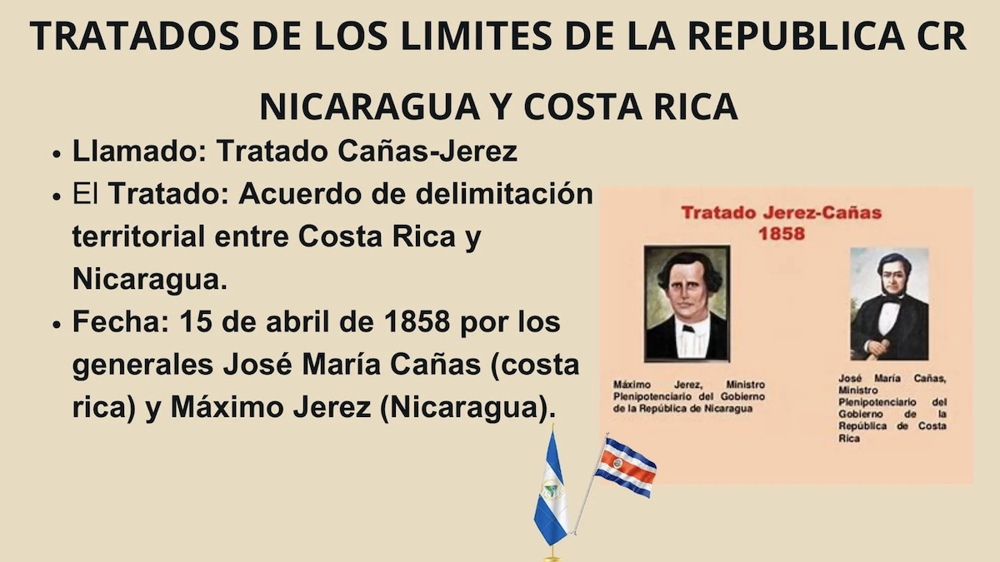

Los vecinos de Costa Rica
¿Sabe usted quiénes son los vecinos de Costa Rica? Seguramente sí. En general, el límite de nuestra propiedad con la del vecino está determinado por una cerca, un muro o la pared de una casa. De manera similar, la superficie de Costa Rica está delimitada por fronteras que señalan hasta dónde llega su territorio. Costa Rica limita al norte con Nicaragua, al este con el Mar Caribe, al oeste con el Océano Pacífico y al sureste con Panamá.
Los vecinos del norte
"Sabanerito de mi alma: hace tiempos que me callo, pues me golpea los sesos el trote de tu caballo."
Con este verso sabemos a quiénes nos referimos como vecinos del norte. Para definir los límites territoriales de Costa Rica en la frontera norte, el país enfrentó varios retos relacionados con los derechos sobre el río San Juan y el territorio de la Alcaldía Mayor de Nicoya.
El 25 de julio de 1824, los habitantes de Nicoya decidieron unirse a Costa Rica bajo el lema "De la Patria por nuestra voluntad". Respecto al río San Juan, el Tratado Cañas-Jerez del 15 de abril de 1858, ratificado por el Laudo Cleveland del 22 de marzo de 1888, establece que el río pertenece a Nicaragua y el límite se sitúa en su margen derecha. Sin embargo, Costa Rica tiene derecho de navegación con fines comerciales, pero no con fines bélicos.
La extensión del límite, de aproximadamente 300 km, incluye los siguientes puntos de referencia:
- Punta Castilla
- Río San Juan
- Castillo Viejo
- Dos millas del Lago de Nicaragua
- Río Sapoá
- Bahía Salinas
El vecino del sureste: Panamá
Para fijar el límite en la frontera sureste, Costa Rica también enfrentó desafíos. Hasta 1903, Panamá era parte de Colombia, que le quitó a Costa Rica lo que hoy es Bocas del Toro en 1836. Finalmente, el 1° de mayo de 1941, se firmó el Tratado Echandi Montero-Fernández Jaén, estableciendo un límite de 363 km basado en elementos naturales y convencionales:
- Bocas de Sixaola
- Confluencia del río Yorkín
- Paralelos 9°30’ Latitud Norte
- Meridiano 82°56’10” Longitud Oeste
- Cumbres de la Cordillera de Talamanca
- Cerro Pando
- Línea divisoria de aguas
- Punta Burica
La Constitución Política de Costa Rica de 1949, en su artículo 5°, sintetiza estos acuerdos sobre los límites con los países vecinos. Al igual que los límites de propiedad entre vecinos, Costa Rica tiene fronteras bien definidas: al norte con Nicaragua, al este con el Mar Caribe, al sureste con Panamá y al oeste con el Océano Pacífico.
Mi Costa Rica
"Si es paraíso o el cielo mismo, eso, señores, yo no lo sé; pero aseguro que es Costa Rica, la patria linda donde nací." "Su cielo lindo y sus montañas, donde se mira brillar el sol, guardan altivos, fieros volcanes, ricos paisajes, suave verdor."
¿Cómo describiría usted a Costa Rica? Tal vez como lo hizo Carmen de Prado en estas estrofas. Sin embargo, para profundizar en su descripción, es útil conocer algunos datos clave sobre el país. Costa Rica forma parte de América Central y es relativamente pequeña, con una extensión de 51,100 km². Está dividida en provincias: San José, Cartago, Alajuela, Heredia, Guanacaste, Puntarenas y Limón.
Como muestra el mapa, algunas provincias son grandes y otras más pequeñas. El territorio costarricense es más largo que ancho, alcanzando una longitud de 464 km desde dos millas antes de la desembocadura del río Sapoá hasta Punta Burica. En su parte más ancha, entre el Mar Caribe y el Océano Pacífico, mide 274 km. El territorio tiene forma trapezoidal y se extiende en dirección Noroeste a Sureste.